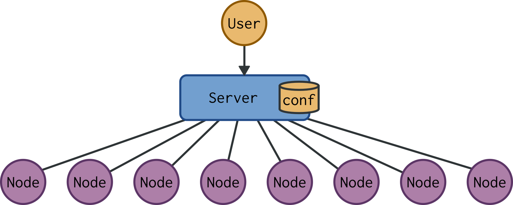

BaseFS
Basically Available, Soft-State, Eventually Consistent File Sytstem for P2P Cloud Management
Created by Marc Aymerich
Cloud Management
Client-Server Architecture
HA Client-Server Architecture

Traditional Cloud is
Centralized
Community Cloud is
Peer-to-peer
How can we do better
P2P management?
Consistency or Availability ...
... You must choose wisely
Eventual Consistency
gossip-style network protocol NO APIs
progress without coordination
BaseFS
BaseFS Under The Hood
TODO overviewLog
Log Entry

revoke, ack, link, slink, mode
Log Entry Properties
- Merkle Direct Acyclic Graph
- Content addressing: uniquely identified by its hash
- Tamper resistance: hash verification
- Deduplication: objects with same hash are equal
- Casual ordering: object linked is older
- Convergent Replicated Data Type
- Message loss: associativity f(f(a, b), c) = f(a, f(b, c))
- Message reordering: commutativity f(a, b) = f(b, a)
- Multiple delivery: idempotency f(f(a)) = f(a)
Blocks

View
- Proof-of-authority:
- Higher hierarchy key branch
- If equal, more contributors branch
- If equal, higher root hash branch
View Example

Gossip Protocol

/etc number of messages

Synchronization Protocol
- Log disemination
- after partition
- large files
- bootsrap joining nodes
File System API
Module Overview

Evaluation
Parametrization
Param: Max Gossiped Blocks

Param: Sync Protocol Interval

Param: Docker Cluster Size

Network Evaluation
- Virtual Environment based on:
- 30 nodes cluster
- Write to one node and measure convergence time
Latency

Bandwidth

Packet Loss

Community-Lab
- Community Network Testbed by the CONFINE project
- 36 node slice with public IPv4 connectivity

Community-Lab: Convergence

Community-Lab: Traffic distribution

File System IO Evaluation
File System Read Performance

File System Write Performance